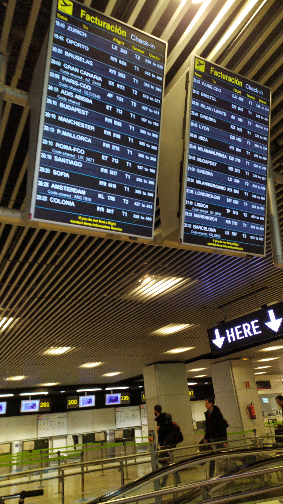
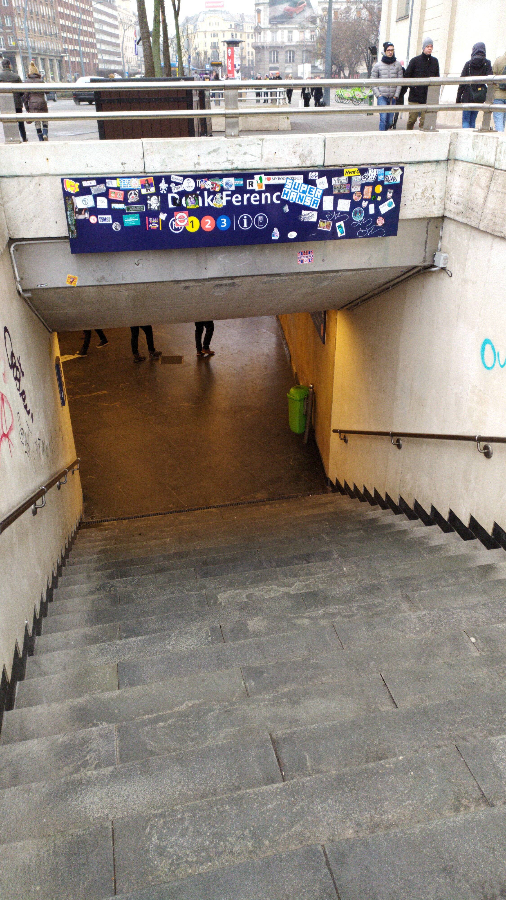
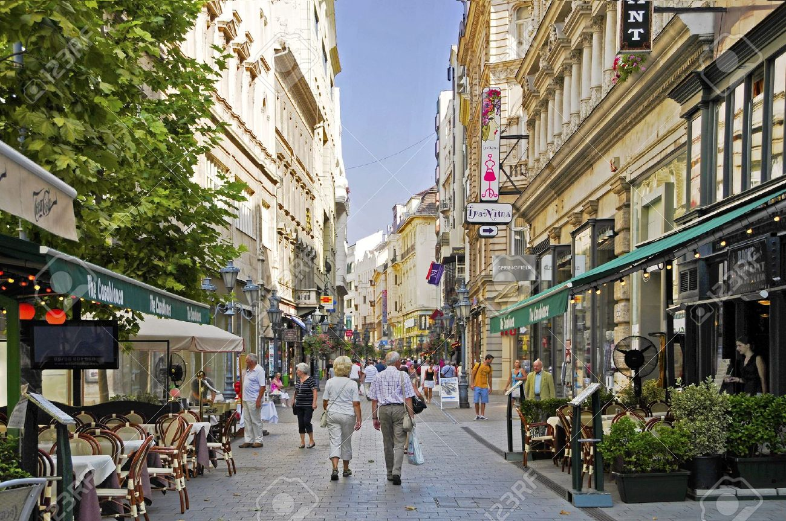
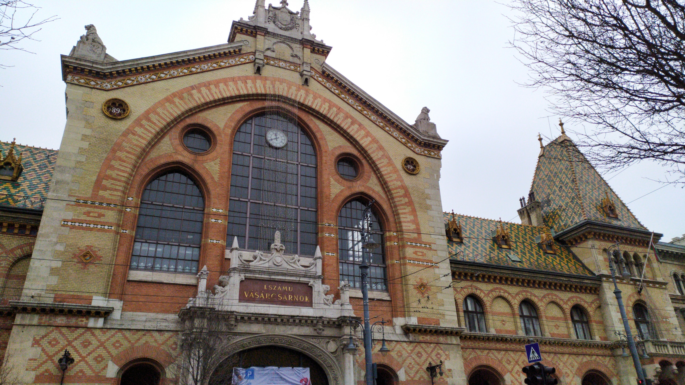
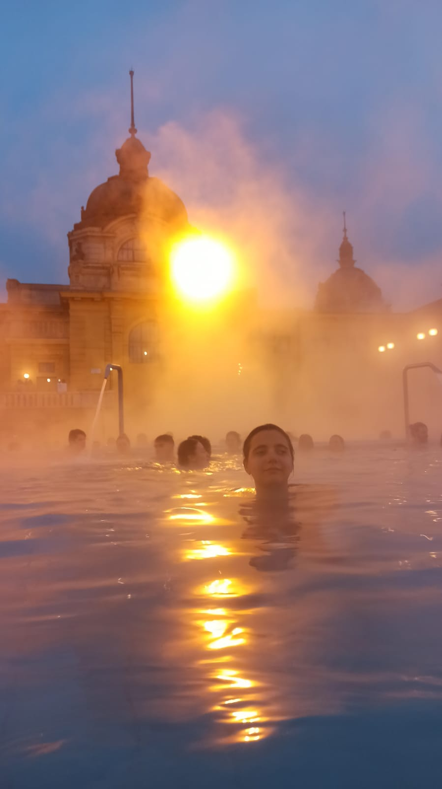
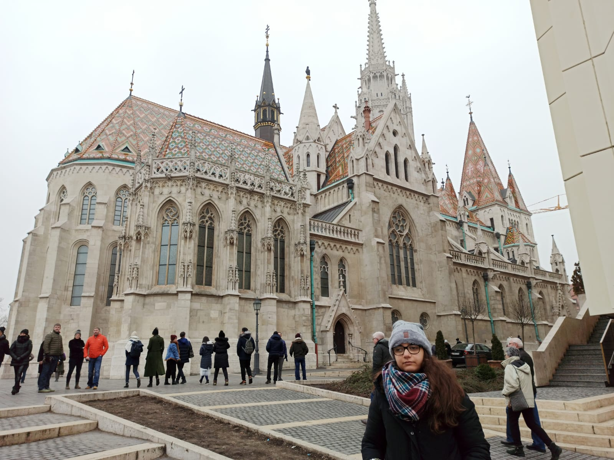
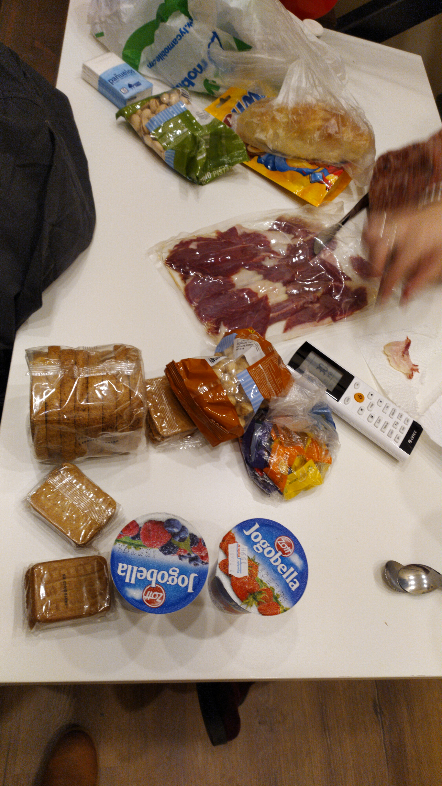
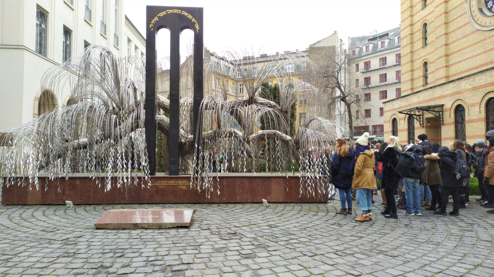
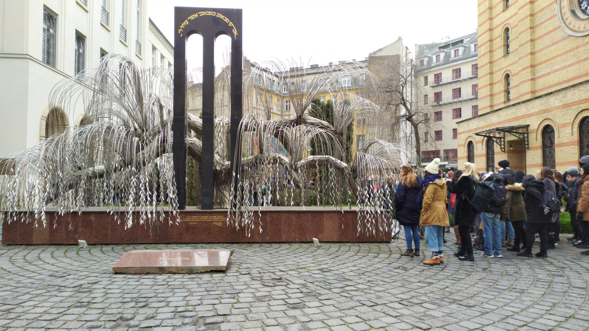

¿Quieres viajar a Budapest? En nuestro caso hicimos el viaje a finales de enero ya que nos apetecía ver nieve, pero no se dio la oportunidad.
Los vuelos, alojamiento y recorrido lo hicimos por nuestra cuenta.
La duración del viaje fue de 4 días, así que si visitas Budapest un finde largo aquí tienes todo lo que ver en Budapest en 3 o 4 días.
En esta página os detallamos el presupuesto para viajar a Budapest durante 4 días, hay que tener en cuenta que Budapest, Hungría en general, es un lugar bastante barato comparados con otras partes de Europa
Como ya he dicho anteriormente Budapest es una de las capitales de Europa más baratas. Tanto el alojamiento como la comida y el transporte son bastante asequibles.
Lo más caro del viaje son los vuelos, aunque siempre hay alguna oferta que los hace más asequible. Nosotras compramos los billetes 1 mes antes de ir.
Otra cosa a tener en cuenta es la moneda. Aunque Budapest forme parte de la Unión Europea, no utiliza el euro sino el florín húngaro.
Los vuelos los cogimos con un mes de antelación o incluso algo menos, esto hizo que nos saliera un poco más alto de precio, pero si tienes flexibilidad de fechas y lo puedes planear con tiempo te aconsejo buscar los vuelos en Skyscanner ya que te dice las temporadas, trayectos y horarios más baratos.
El vuelo de vuelta no lo había directo para el horario que necesitábamos por lo que tuvimos que hacer escala en Bruselas.
- Vuelo de ida Madrid-Budapest con Wizz Air 100€ por persona.
- Vuelos de vuelta
- Budapest-Bruselas con Brussels Airlines 40€ por persona
- Bruselas-Madrid con Brussels Airlines 32€ por persona.

 Imagen de la pantalla del aeropuerto de Madrid y de nosotras en el avión de ida.
Imagen de la pantalla del aeropuerto de Madrid y de nosotras en el avión de ida.
El tiempo de espera de la escala fue de 65 minutos, que personalmente pasaron bastante rápidos.
En total los vuelos nos salieron a 172€ por persona, que como ya he dicho si tienes disponibilidad en cuanto a fechas y horario te pueden salir ambos vuelos directos por unos 80€.
Por este precio en la ida nos incluía un bolso de mano y una maleta facturada de máximo 10kg, que nosotras por novatas no facturamos y terminamos subiendo al avión, esto costaba 20€ más por maleta. En la vuelta nos entraba bolso de mano y equipaje de cabina, cosa que nos tranquilizó bastante.
Hay que tener en cuenta que este suplemento por equipaje de cabina en aerolineas como Ryanair, Vueling, Air Europa y Wizz Air se debe pagar si quieres que la maleta vaya contigo en cabina.
Otra cosa importante es si tienes disponibilidad horaria es buscar vuelos que salgan a primera hora de la mañana y vuelvan a última hora de la noche.
En nuestro caso, como ya he dicho el vuelo de ida salía a las 20:55 y llegaba a las 23:55 pero se retrasó. Los vuelos de vuelta salían a las 06:20 de Budapest llegando a las 08:25 a Bruselas y de aquí salíamos a las 09:30 llegando a las 11:50 a Madrid.
Junto a la comida este fue nuestro menor gasto ya que después de mucho buscar encontramos una gran oferta en Airbnb, después de un par de chascos debido a que nos cancelaban la estancia.
La mejor zona para alojarse es la parte de Pest. Nosotras elegimos un alojamiento en el barrio judío a escasos minutos de Nagy Zsinagóga, la sinagoga más grande de Europa y la segunda más grande del mundo.
El apartamento estaba bastante céntrico y solo tuvimos que coger transporte para ir al balneario Széchenyi, que más tarde explicaré cómo llegar y cuánto cuesta.
Pasamos las 4 noches en un pequeño estudio a doble planta donde en la parte de arriba había dos camas individuales y en la parte de abajo un baño, una mesa con 2 sillas y unos utensilios de cocina. No recomiendo este alojamiento para largas estancias ya que no se puede cocinar en él, pero para nosotras, que nuestra intención era pasar todo el día fuera de casa y al llegar cenar algo rápido, bastaba. Cabe destacar que la entrada era autónoma mediante una caja de seguridad
- El alojamiento en el barrio judío de Budapest 4 noches nos salió a 81,81€, lo que equivale a 10,22€ al día por persona.
Nuestro apartamento era LiTi City Apartment Budapest Jewish Quarter, lo cogimos a través de Airbnb, ya que siempre me ha ido bien con ellos.
Este apartado podemos dividirlo en dos partes, el transporte entre el apartamento y el aeropuerto y el transporte público.
Aunque también se puede hacer en transporte público, para ir y venir del aeropuerto al apartamento contratamos un transporte privado en Gettransfer nos salió a 40,40€ ambos viajes las dos personas.
De aquí debo destacar que aunque la comodidad fue máxima ya que estábamos muy cansadas y que nos recogieran en el aeropuerto y nos dejaran en la puerta del apartamento fue todo un acierto, hubo un pequeño inconveniente y fue que nosotras al contratarlo pedimos que hablara inglés el conductor, al intentar comunicarnos con él nos dimos cuenta que no tenía ni idea de dicho idioma y solo hablaba húngaro, a pesar de esto fue muy simpático y atento.
Para ir en transporte público, puedes comprar billetes sencillos, bonos de un día, de 10 viajes, etc. Nosotras no compramos ninguno.
Los tickets también se pueden comprar en una máquina junto a la parada del autobus 100E o en el propio autobús, aunque en este caso debes pagar en metálico y en florines.
La forma más común de ir del aeropuerto de Budapest al centro es con el autobús 100E. Se trata de un shuttle bus que te deja en el centro en 40 minutos. El billete cuesta 900 florines (unos 3 euros más o menos).
El autobús para en Kálvin tér y Astoria M, ambas zonas muy céntricas de Pest (la parte moderna de Budapest), antes de llegar a Deák Ferenc Tér, en pleno centro de Budapest. En Deak Ferenc puedes hacer transbordo en cualquiera de las otras líneas de metro de Budapest, la M1 (amarilla), la M2 (rojo), o la M3 (azul).
El autobús sale cada 20 minutos. Desde el aeropuerto sale de 04:10 a 00:35, y desde Deák Ferenc tér de 03:30 a 00:00.
Si tienes que trasladarte del aeropuerto de Budapest al centro de la ciudad o viceversa de 11 p.m. a 4 a.m hay que hacerlo o con el autobús 100E (si funciona) o mediante una combinación de dos autobuses ya que el metro no opera a esas horas.
De 11:00 pm hasta la 4:00 am sigue funcionando el bus 200E hasta la parada Határ út, y desde esta parada salen buses nocturnos (914, 914A, 950 y 950A) que te dejan en el centro de Budapest.
Para movernos por la ciudad, nosotras lo hicimos andando ya que para mi, es la mejor forma de conocer los monumentos, cultura, gente de los lugares. Pero para ir al balneario tuvimos que coger el metro, en nuestro caso, que estábamos alojadas en el centro, cogimos la línea amarilla, M1, en la parada Deak Ferenc y nos bajamos en Széchenyi fürdö, el viaje duró unos 10 minutos, luego tuvimos que andar unos 5 minutos hasta el balneario, aunque por el camino paramos a visitar un par de cosas y a hacernos unas fotos ya que el día estaba muy bueno.
En esta página puedes encontrar el itinerario que mejor se adapte a ti.

Entrada de metro.
Un consejo que os doy es que a la hora de organizar tu presupuesto no escatimes en gastar en actividades y entradas, hay mucho que ver y a un precio bastante barato.
Hay muchas cosas para ver y hacer pero os comento las que veo imprescindibles.
-
Parlamento de Budapest.
El mejor momento para verlo es a primera hora de la mañana con el amanecer, ya que está situado a orillas del Danubio y queda una estampa muy bonita.
Al salir del parlamento puedes acercarte a la orilla del Danubio para ver el conmovedor monumento Zapatos en el Danubio, construido en recuerdo a los judíos asesinados en esta ciudad durante la Segunda Guerra Mundial.
Aunque se puede conocer el Parlamento por tu cuenta la mejor opción es reservar esta visita guiada con guía en español.
 Vistas del Parlamento desde el Bastión de los Pescadores.
Vistas del Parlamento desde el Bastión de los Pescadores.
 Monumento Zapatos en el Danubio.
Monumento Zapatos en el Danubio.
-
Puente de las Cadenas.
Paseando por la orilla del Danubio llegarás a este puente, es una reconstrucción idéntica del que destruyeron los alemanes durante la Segunda Guerra Mundial, y el más antiguo que une a Buda y Pest.
Yo aconsejo visitarlo cuando esté anocheciendo y desde la orilla de Pest ya que una imagen preciosa del puente iluminado y el castillo de Buda de fondo.

Puente de las cadenas con la Montaña Gellert de fondo.
-
Váci Utca
Es un imprescindible a la hora de hacer compras, es una calle peatonal, la más comercial. Hay muchas tiendas para comprar souvenirs, bares y restaurantes tipicos y llega hasta el Mercado Central, que es el mercado cubierto más grande del país.

Calle Vaci-Utca

Mercado Central de Budapest.
-
Barrio Judío y Gran Sinagoga
Antiguo gueto donde se obligó a vivir en condiciones deplorables a los judíos durante la ocupación nazi.
El lugar más importante del barrio es la Gran Sinagoga de Budapest, que como ya hemos dicho es la segunda más grande del mundo.Tiene justo detrás el Templo de los Héroes y el Árbol de la Vida, del que cuelgan miles de hojas metálicas con los nombres de los judíos asesinados en la Segunda Guerra Mundial.
Nosotras compramos las entradas en la taquilla y esperamos para hacer el tour gratuito en español, que nos impresionó y emocionó mucho. Las entradas también se pueden comprar por internet.
-
Ruins bars
Son edificios que fueron abandonados durante la ocupación nazi y quedaron en estado ruinoso, hasta que gente joven e ingeniosa los cogió y transformó con materiales reciclados en locales con una decoración muy original.
Hay varios como el Instant, el Dürer Kert, el Mazel Tov, pero nosotras visitamos el más famoso y el pionero, Szimpla Kert.
Nos recomendaron un tour de fiesta para conocerlos todos mejor, pero como nosotras no somos muy fiesteras no lo hicimos.

 Ruin bar Szimpla Kert
Ruin bar Szimpla Kert
-
Basílica de San Esteban
Es una basílica de culto católico y está dedicado a San Esteban, el primer rey de Hungría. Como dato curioso dentro de ella se guarda como reliquia la mano derecha del rey y la campana más grande del país.

Basílica de San Esteban.
-
Avenida Andrássy y Plaza de los Héroes
Es uno de los paseos más populares de Budapest, une el centro de la ciudad con la Plaza de los Héroes, tiene una longitud de 2,5km y fue declarada Patrimonio de la Humanidad por la UNESCO en 2002.
Por el paseo encontrarás tiendas lujosas y museos interesantes, llegando a la Plaza de los Héroes, que tiene siete estatuas ecuestres que representan a los líderes de las tribus fundadoras de Hungría acompañadas de una columna de 36 metros de alto, coronada por una estatua del Arcángel Gabriel.

Plaza de los Héroes.
-
Parque Varosliget
Es el parque más importante de Budapest, fue un antiguo coto de caza. En él puedes dar un paseo por sus amplios senderos, hacer un picnic, recorrer su lago en una barca o patinar sobre una pista de hielo.
Las partes que más nos gustaron fueron el Castillo Vajdahunyad y la Estatua del Anónimo, de la que se dice que si tocas su pluma te dará buena suerte.
 Pista de patinaje dentro del parque.
Pista de patinaje dentro del parque.

 Castillo Vajdahunyad.
Castillo Vajdahunyad.
-
Balneario Széchenyi
Se encuentra dentro del Parque Varosliget. Es uno de los mayores baños termales de Europa y el más popular de Budapest.
Tiene 3 grandes piscinas al aire libre, que al ir en invierno pudimos presenciar una sensación muy curiosa ya que se mezclava el aire frio del exterior, unos 2 o 3 grados bajo 0 con el agua caliente a 34 grados, esto está indicado por un termómetro muy grande que está situado en el patio central.
También hay 12 piscinas cubiertas, saunas, salas de masaje...
Algo obvio es llevar toalla, chanclas y bañador aunque también podrás alquilarlos allí.
Hay diferentes tipos de entrada, nosotras cogimos la entrada con cabina privada para las dos, nos salió al cambio a unos 21€ por persona y estuvimos casi todo el día. Puedes comprar las entradas por internet para evitar colas, aunque tienes que recogerla en un horario determinado para que te den la pulsera que te permite abrir tu cabina y entrar.

 Fotos en la piscina principal del balneario al descubierto.
Fotos en la piscina principal del balneario al descubierto.
-
Castillo de Buda
Mi recomendación es subir andando, aunque también se puede en funicular, desde donde hay unas vistas únicas de la ciudad.
Está construido en lo alto de la Colina de Buda y fue destruido durante la Segunda Guerra Mundial y reconstruido en un estilo neoclásico. Dentro de él se encuentran la Galería Nacional Húngara, el Museo de Historia de Budapest y la Biblioteca Széchenyi, nosotras no las visitamos pero si vas con tiempo es aconsejable.

Castillo de Buda.
-
Bastión de los Pescadores
A mi parecer es el mejor mirador de Budapest. Tiene siete torres que representan las siete tribus que fundaron el país.Tienes unas vistas impresionantes del Parlamento iluminado al anochecer. Nosotras fuimos por el día por tema de horarios.
Al lado está la Iglesia de Nuestra Señora, que es la iglesia católica más importante de la ciudad, ya que en ella se coronaron varios reyes húngaros.
 Bastión de los Pescadores.
Bastión de los Pescadores.

Iglesia de Nuestra Señora.
Lo principal es que la comida en Budapest es bastante barata, tanto en restaurantes como en los supermercados.
En nuestro caso, la primera noche al llegar fuimos a una tienda 24 horas que estaba cerca del apartamento y compramos para el desayuno.
Las comidas las hacíamos fuera de casa, la primera fue en un bar de la calle Váci, donde curiosamente se comía de pie, nos salió la comida a unos 5€ por persona y la cantidad era contundente. La segunda comida la hicimos en una pizzería frente a la Basílica de San Estaban, donde nos salió a 1€ la porción, en total más la bebida gastamos 4€ cada una en la comida. Y la tercera y última comida la hicimos en un restaurante precioso cerca del balneario donde comimos el famoso goulash, que es un estofado de ternera con zanahoria, patata y pan, la ración más la bebida nos salió a 20€ por persona, hay que decir que en este caso quisimos ir a algo "lujoso" para despedirnos.
Un sitio que visitamos pero donde no pudimos comer pero tenía muy buena pinta fue en el Mercado Central, donde se podía comer platos enormes por 6€.
Las cenas las hacíamos en casa comprando algo en un Lidl que nos quedaba muy cerca del apartamento.
En total, más o menos, gastamos unos 70€ por persona a unos 17,5€ por día.

Provisiones para la cena de la primera noche.


Comida de los tres días.
-
Mejor época para viajar.
Esto depende de lo que quieras ver, nosotras que fuimos con la intención de ver nieve y ver algún vestigio de la navidad, elegimos bien la fecha, pero lo más recomendable es ir en primavera y otoño, de mayo a septiembre, porque las temperaturas son más suaves, hay menos turismo y los precios son más bajos aún.
En verano las temperaturas superan los 30 grados, las lluvias son más frecuentes y hay un gran número de turistas por lo que la ciudad está saturada y los precios inflados.
- Requisitos de entrada
Si eres español, para entrar a Hungría, solo necesitas el DNI o el pasaporte, al ser un país de la Unión Europea. Si no eres ciudadano de la Unión Europea necesitarás consultar en el Ministerio de Exteriores o en la embajada húngara de tu país, para ver si necesitas visado y conocer todos los requisitos de entrada.
Nosotras siempre recomendamos en todos los viajes por la UE llevar DNI y pasaporte en dos sitios diferentes, además de una copia en la nube, para que en caso de perdida o robo, puedas resolver el problema en poco tiempo.
Otro de los consejos para viajar a Budapest o Hungría, es que lleves la Tarjeta Sanitaria Europea.
- Rutas por la ciudad
Un buen consejo es que antes de salir del apartamento trazar bien el itinerario del día para optimizar al máximo el tiempo.
Mi recomendación es dedicarle 2 o 3 días a ver Budapest y disfrutar de sus calles y avenidas.
Aunque casi todos los puntos turísticos de la ciudad se pueden visitar a pie y por cuenta propia también es aconsejable reservar un freetour por la ciudad.
En total, y sumando los souvenirs y regalos, este es el desglose del presupuesto para cuatro días en Budapest:
| TABLA DE PRESUPUESTO |
| Servicios |
Gastos |
| Angela |
Medea |
| Vuelos |
172€ |
| Alojamiento |
40,9€ |
| Actividades y entradas |
40€ |
| Comida |
50€ |
80€ |
| Souvenirs |
40€ |
20€ |
| Transporte |
22€ |
Total |
364,9€ |
374,9€ |
Nuestro viaje a Budapest de 4 días nos costó poco menos de 400€ por persona con todo incluido. Si quieres un presupuesto más económico, en vez de coche privado como transporte en la ida y en la vuelta, puedes hacerlo en transporte público, gastar menos en souvenirs, comprar en supermercados y cocinar en el apartamento y coger los vuelos con mucha antelación.
Por favor, si tiene un minuto, conteste esta breve encuesta.


 
